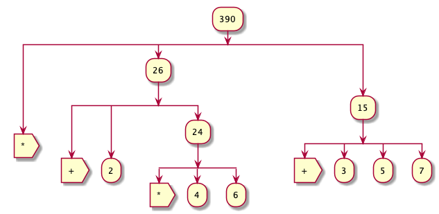

SICP-Notes
Table of Contents
1 Building Abstractions With Procedures
A computational process, in a correctly working computer, executes programs precisely and accurately.
1.0.1 Why Lisp
- Lisp descriptions of processes, called procedures, can themselves be represented and manipulated as Lisp data.
- The ability to represent procedures as data also makes Lisp an excellent language for writing programs that must manipulate other programs as data, such as the interpreters and compilers that support computer languages.
- It's great fun
1.1 The Elements of Programming
The language serves as a framework within which we organize our ideas about processes. Languages have three mechanisms by which they express this:
- primitive expressions, which represent the simplest entities the language is concerned with,
- means of combination, by which compound elements are built from simpler ones, and
- means of abstraction, by which compound elements can be named and manipulated as units.
In programming, we deal with two kinds of elements: procedures and data.
- data data is “stuff” that we want to manipulate
- procedures are descriptions of the rules for manipulating the data.
1.1.1 Expressions
- Expressions can be as simple as a number.
2
2
- Expressions can be combined with primitive procedures (+ * etc…)
(+ 2 3)
5
- .. and these can be combined into Combinations
(+ 5 (- 3 2) (* 7 6))
48
1.1.2 Naming and Environment
Define is our language’s simplest means of abstraction, for it allows us to use simple names to refer to the results of compound operations.
It should be clear that the possibility of associating values with symbols and later retrieving them means that the interpreter must maintain some sort of memory that keeps track of the name-object pairs. This memory is called the environment (more precisely the global environment, since we will see later that a computation may involve a number of different environments).9
1.1.3 Evaluating Combinations
To evaluate a combination, do the following:
- Evaluate the subexpressions of the combination.
- Apply the procedure that is the value of the leftmost subexpression (the operator) to the arguments that are the values of the other subexpressions (the operands).
(* (+ 2 (* 4 6)) (+ 3 5 7))
390
For example the above expression requires that the evaluation rule be applied to four different combinations.

The “percolate values upward” form of the evaluation rule is an example of a general kind of process known as tree accumulation.
Next, observe that the repeated application of the first step brings us to the point where we need to evaluate, not combinations, but primitive expressions such as numerals, built-in operators, or other names. We take care of the primitive cases by stipulating that
- the values of numerals are the numbers that they name,
- the values of built-in operators are the machine instruction sequences that carry out the corresponding operations, and
- the values of other names are the objects associated with those names in the environment.
Notice that the evaluation rule given above does not handle definitions. For instance, evaluating (define x 3) does not apply define to two arguments
Such exceptions to the general evaluation rule are called special forms.
The evaluation rule for expressions can be described by a simple general rule together with specialized rules for a small number of special forms.
1.1.4 Compound Procedures
Procedure definitions are a much more powerful abstraction technique by which a compound operation can be given a name and then referred to as a unit.
This is expressed in our language as:
(define (square x) (* x x))
Having defined square we can now use it:
(square 4)
16
We can also now use square inside of definitions of other procedures.
(define (sum-of-squares x y) (+ (square x) (square y))) (sum-of-squares 3 4)
25
Of course, now we can use sum-of-squares as a building block for constructing furthur procedures.
(define (f a) (sum-of-squares (+ a 1) (* a 2))) (f 5)
136
Compound procedures are used in exactly the same way as primitive procedures. Indeed, one could not tell by looking at the definition of sum-of-squares given above whether square was built into the interpreter, like + and *, or defined as a compound procedure.
1.1.5 The Substitution Model for Procedure Application
- Applicative Order Evaluation
To apply a compound procedure to arguments, evaluate the body of the procedure with each formal parameter replaced by the corresponding argument.
Take our expression:
(f 5)Substitute the body of f
(sum-of-squares (+ a 1) (* a 2))Then we replace the formal parameter
awith5(sum-of-squares (+ 5 1) (* 5 2)We must evaluate the operator to get the procedure to be applied, and we must evaluate the operands to get the arguments.
(+ (square 6) (square 10))This reduces to:
(+ (* 6 6) (* 10 10))Which reduces by multiplication to:
(+ 36 10)and finally to:
136 - Normal Order Evaluation
This is not the only way to perform evaluation. An alternative evaluation model would not evaluate the operands until their values were needed. Instead it would first substitute operand expressions for parameters until it obtained an expression involving only primitive operators, and would then perform the evaluation.
(sum-of-squares (+ 5 1) (* 5 2))(+ (square (+ 5 1)) (square (* 5 2)))(+ (* (+ 5 1) (+ 5 1)) (* (* 5 2) (* 5 2)))Then it's followed by reductions
(+ (* 6 6) (* 10 10))(+ 36 100)**
136Applicative order versus normal order It can be shown that, for procedure applications that can be modeled using substitution (including all the procedures in the first two chapters of this book) and that yield legitimate values, normal-order and applicative-order evaluation produce the same value.Lisp uses applicative order, note having to evaluate the same expression twice in the normal-order expansion.
1.1.6 Conditional Expressions and Predicates
\(|x| = \begin{cases} x & if & x > 0 \\ 0 & if & x = 0 \\ -x & if & x < 0 \end{cases}\)
This construct is called a case analysis, and there is a special form in Lisp for notating such a case analysis. It is called cond (which stands for “conditional”), and it is used as follows:
(define (abs x) (cond ((> x 0) x) ((= x 0) 0) ((< x 0) (- x)))) (abs 3)